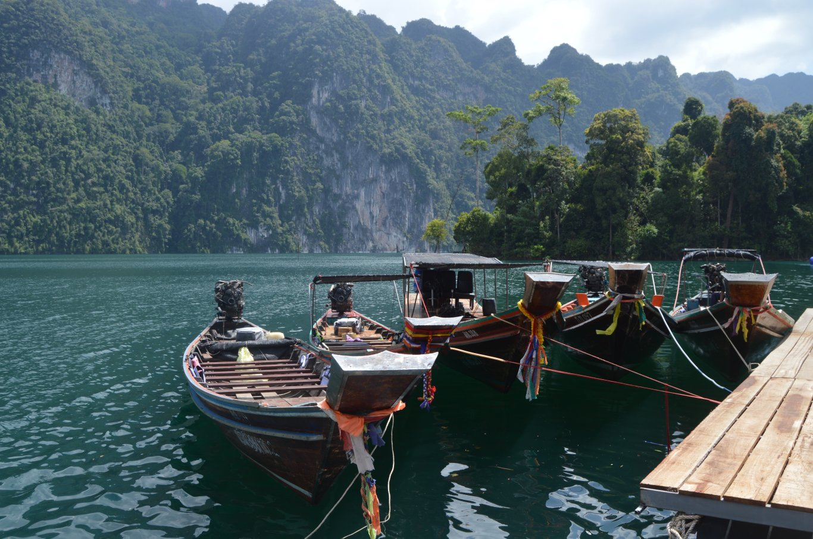
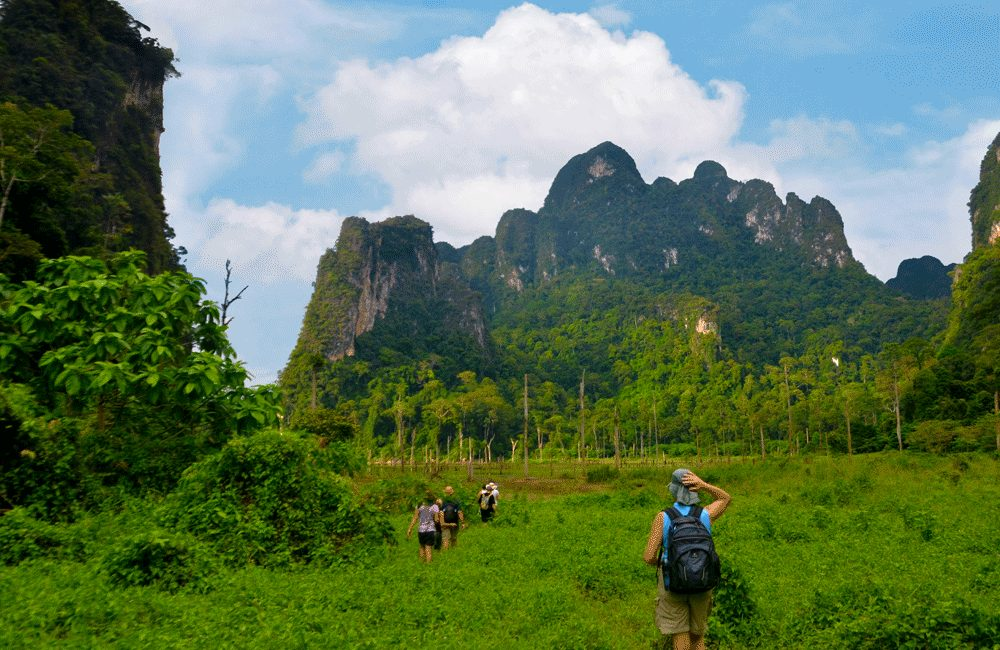
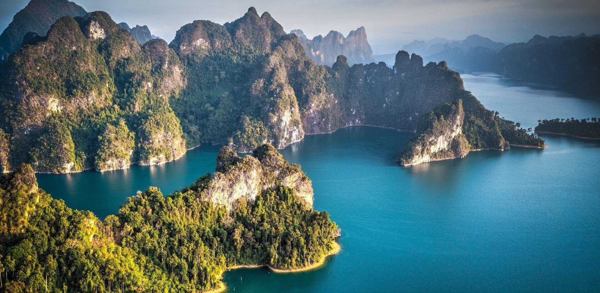
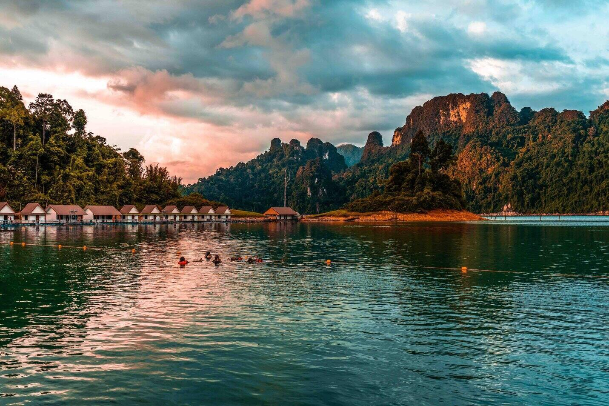
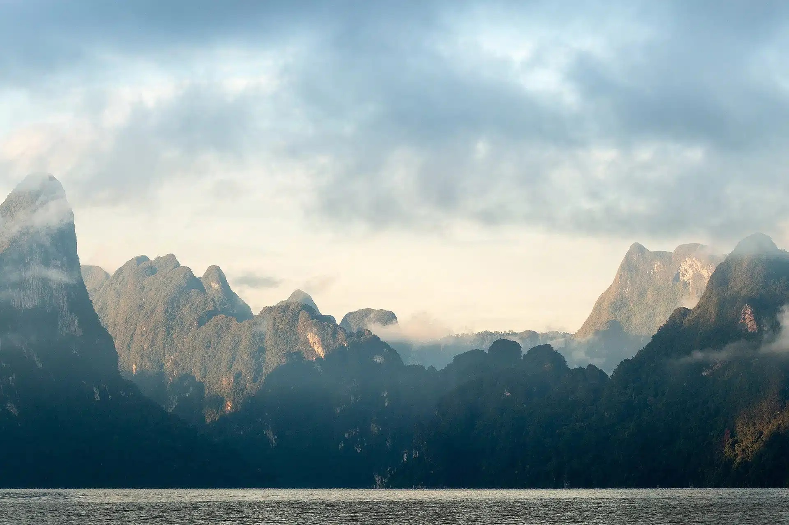
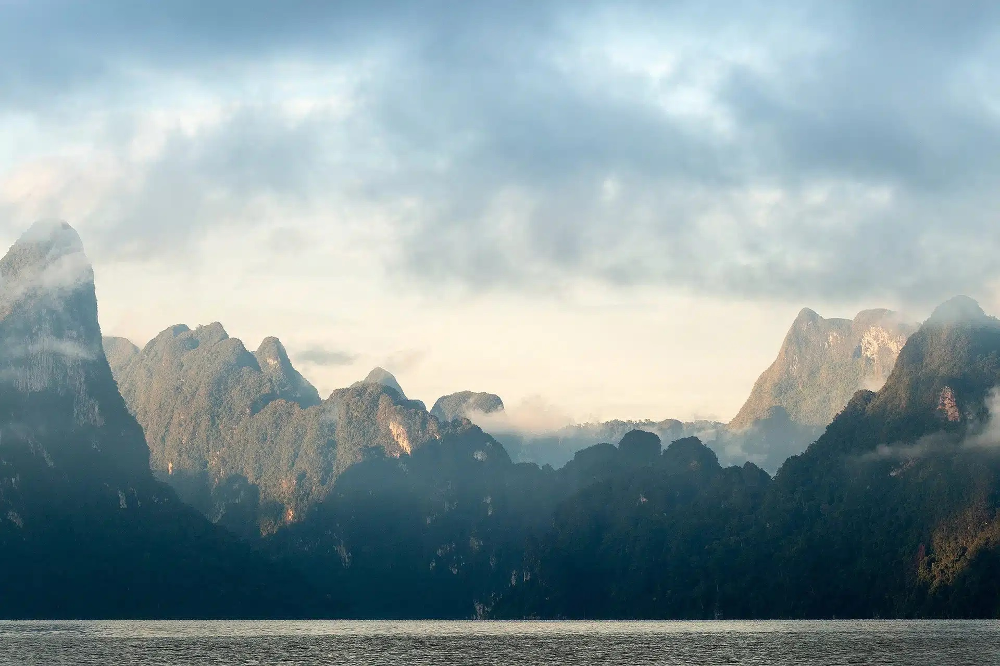
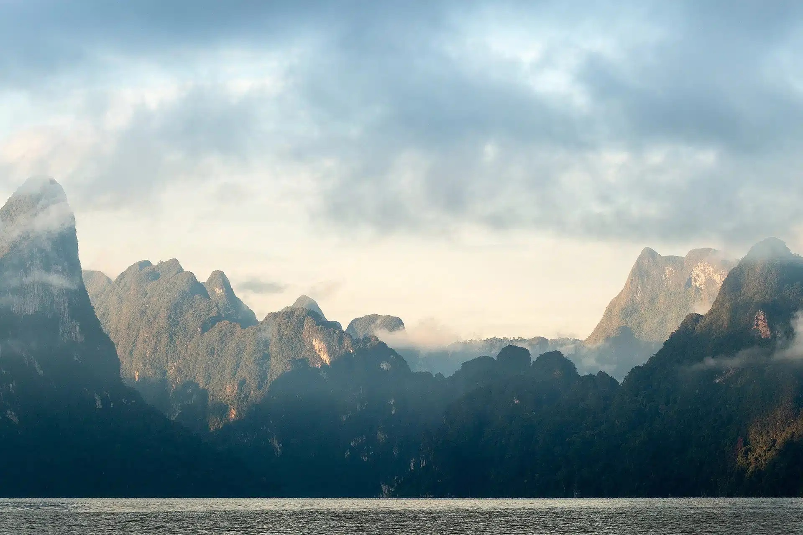

Khao Sok National Park
Experience Thailand's Pristine Wilderness




 


About Khao Sok National Park
Khao Sok National Park is a breathtaking expanse of dense rainforest, towering limestone mountains, and pristine lakes. Located in Southern Thailand, it's home to one of the world's oldest rainforests and a diverse array of wildlife. Visitors can immerse themselves in nature through jungle trekking, canoeing, cave exploration, and staying in floating bungalows on Cheow Lan Lake. Khao Sok offers a serene escape for adventurers and nature enthusiasts alike.
Top Rated Activities & Events
- Explore Cheow Lan Lake by boat and stay in floating bungalows.
- Trek through the ancient rainforest and spot wildlife.
- Visit Nam Talu Cave for adventurous cave exploration.
- Go canoeing or kayaking along the Sok River.
- Participate in a night safari to experience nocturnal wildlife.